Streamline
Villa
Malé, Maldives
Streamline Villa is a five-storey mixed-use building designed for an urban site in Malé. The project explores fluidity and movement through curved balcony forms, creating a softer architectural expression within the dense urban context.
Explore project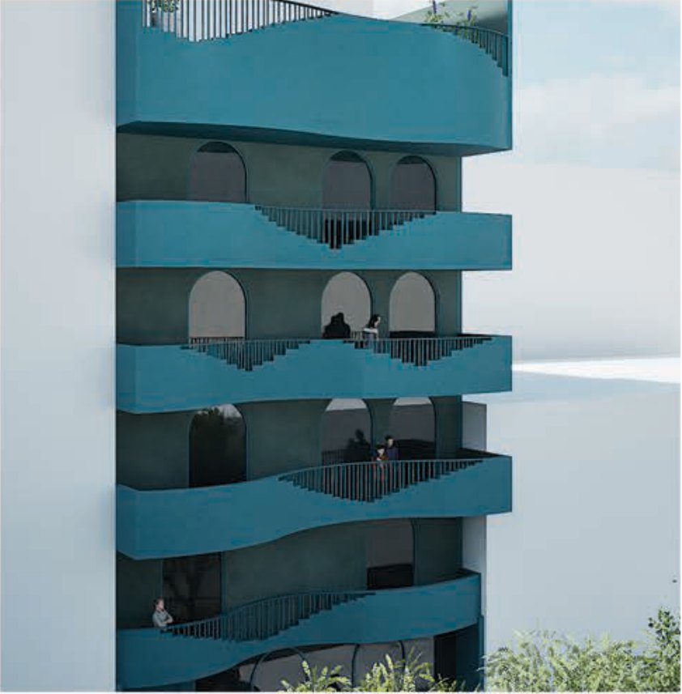
ConceptDevelopment
From fluidity to architectural form
The concept explores fluidity and movement through flowing architectural forms. Curved elements shape the façade and building form, while ocean-inspired colours create a sense of calm and flow.
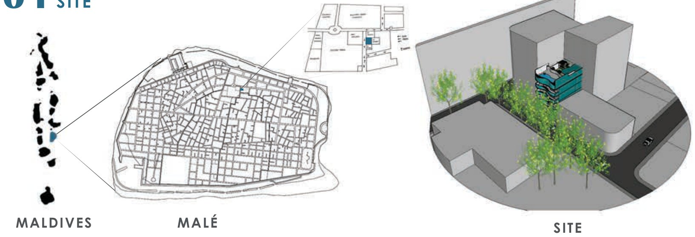
Curved lines soften the building’s edge, carrying a sense of continuous movement into the tight grid of Malé.
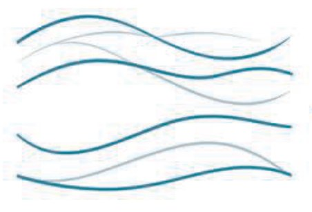
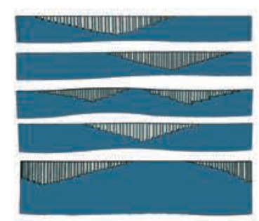
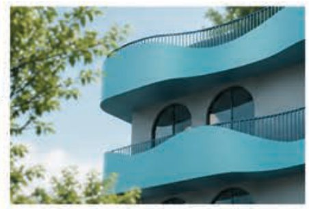
DesignProcess
Movement becomes space
Retail and arrival on the ground floor, entertainment on the first, residences on the typical floors and a pool terrace on the roof, each level organised through the same flowing language.
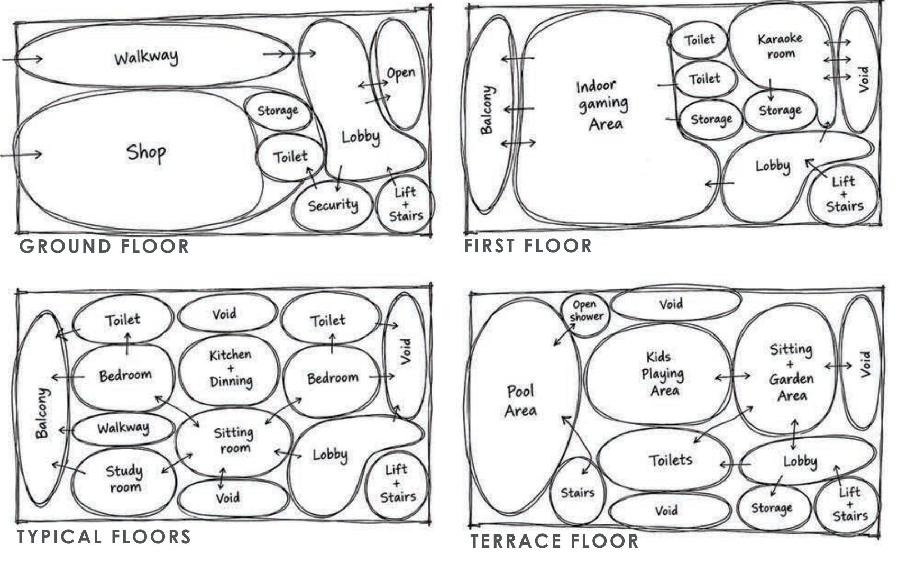
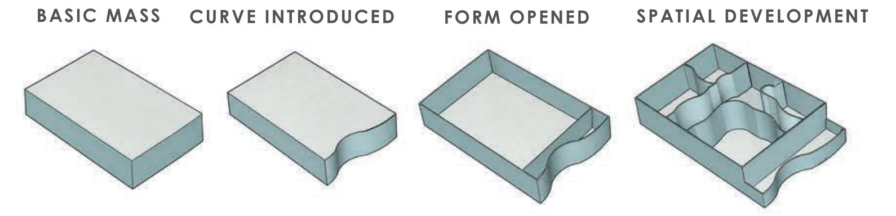
FloorPlans
Floor plan development
Four plan types, each paired with a sectional axonometric. The curve moves in from the façade to shape lobbies, rooms and the terrace pool.
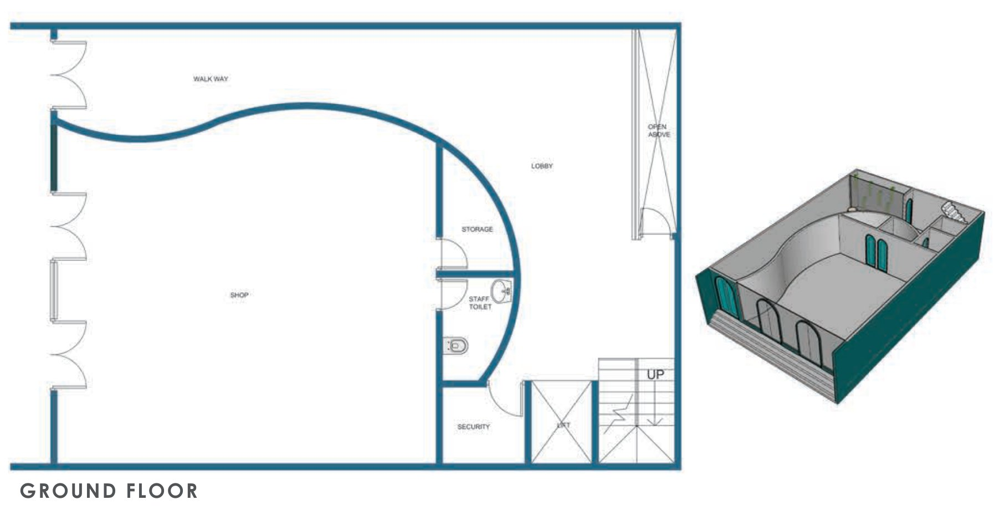
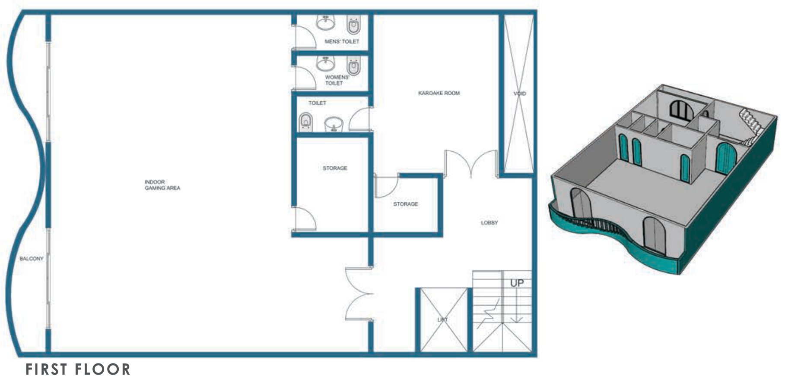
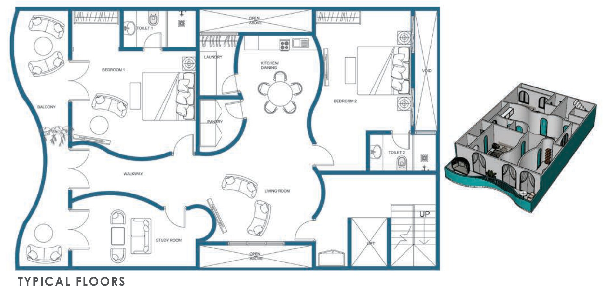
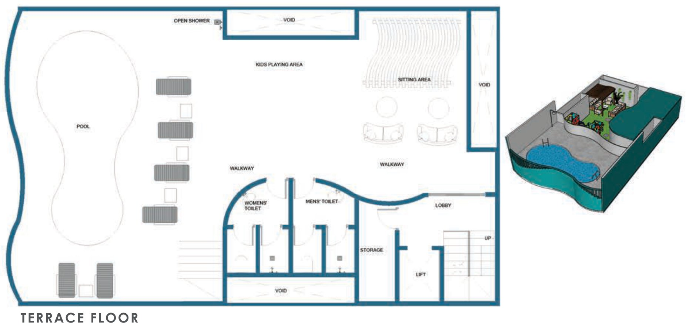
FinalDesign
Final views
Ocean-blue balconies wrap the building in continuous, overlapping curves, giving the street a softer edge and every home an outdoor space.
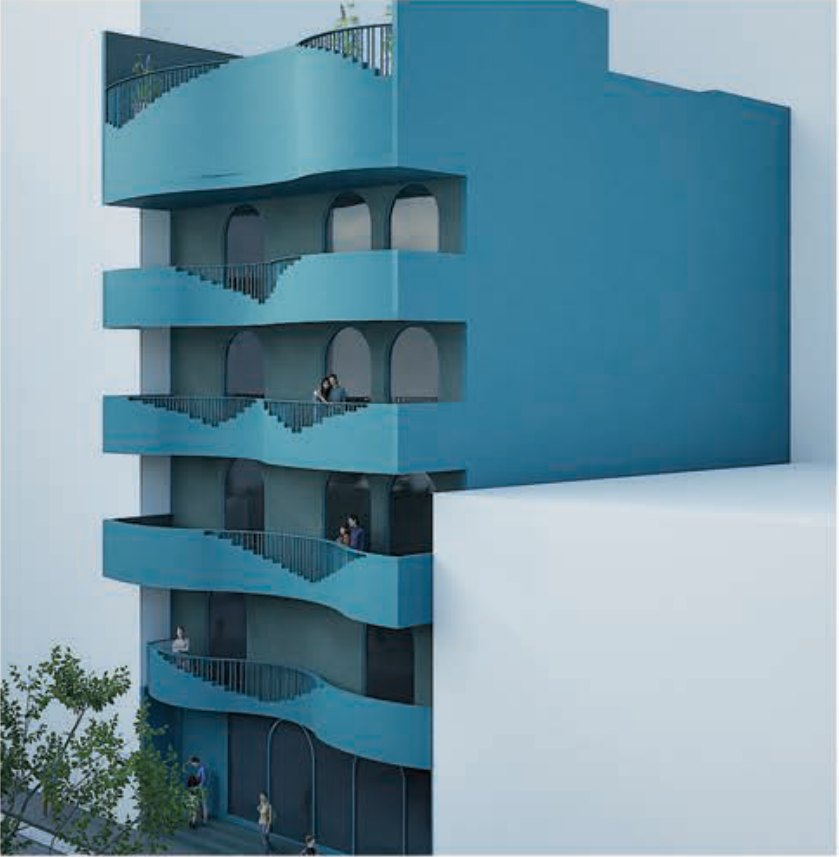
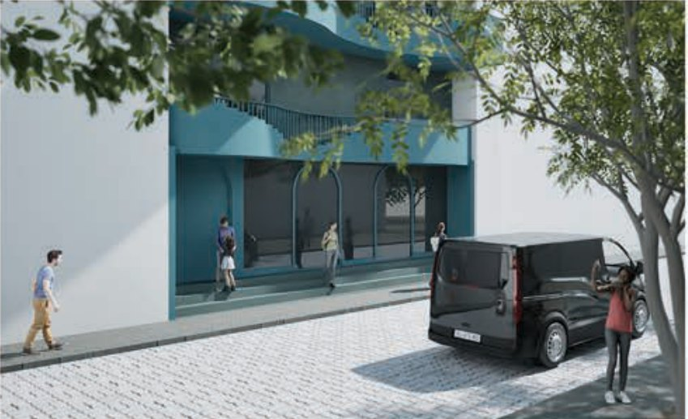
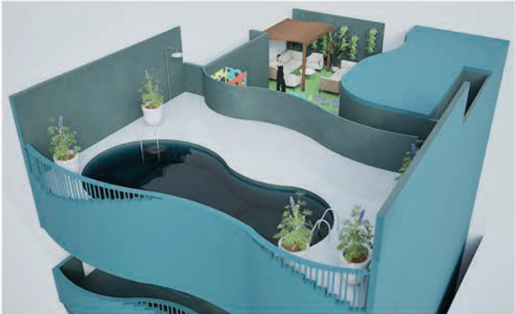